File: 000000.gt.txt (if the image is defective, simply delete all Arabic text and the line will be excluded)
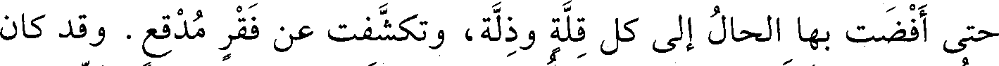
حتى أفضت بها الحال إلى كل قلة وذلة، وتكشفت عن فقر مدقع. وقد كان
File: 000001.gt.txt (if the image is defective, simply delete all Arabic text and the line will be excluded)
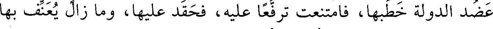
عضد الدولة خطبها، فامتنعت ترفعا عليه، فحقد عليها، وما زال يعنف بها
File: 000002.gt.txt (if the image is defective, simply delete all Arabic text and the line will be excluded)
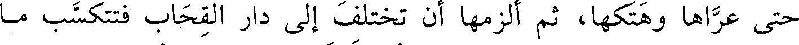
حتى عراها وهتكها، ثم ألزمها أن تختلف إلى دار القحاب فتتكسب ما
File: 000003.gt.txt (if the image is defective, simply delete all Arabic text and the line will be excluded)
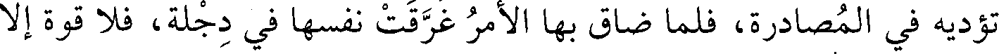
تؤديه في المصادرة، فلما ضاق بها الأمر غرقت نفسها في دجلة، فلا قوة إلا
File: 000004.gt.txt (if the image is defective, simply delete all Arabic text and the line will be excluded)
سنة سبع وستين وثلاث مائة
File: 000005.gt.txt (if the image is defective, simply delete all Arabic text and the line will be excluded)
بالله.
File: 000006.gt.txt (if the image is defective, simply delete all Arabic text and the line will be excluded)
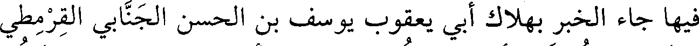
فيها جاء الخبر بهلاك أبي يعقوب يوسف بن الحسن الجنابي القرمطي
File: 000007.gt.txt (if the image is defective, simply delete all Arabic text and the line will be excluded)
صاحب هجر، فأغلقت أسواق الكوفة له ثلاثة أيام، وكان موازرا لعضد
File: 000008.gt.txt (if the image is defective, simply delete all Arabic text and the line will be excluded)
الدولة.
File: 000009.gt.txt (if the image is defective, simply delete all Arabic text and the line will be excluded)
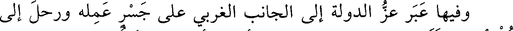
وفيها عبر عز الدولة إلى الجانب الغربي على جسر عمله ورحل إلى
File: 000010.gt.txt (if the image is defective, simply delete all Arabic text and the line will be excluded)
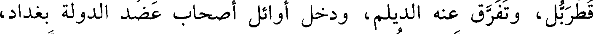
قطربل، وتفرق عنه الديلم، ودخل أوائل أصحاب عضد الدولة بغداد،
File: 000011.gt.txt (if the image is defective, simply delete all Arabic text and the line will be excluded)
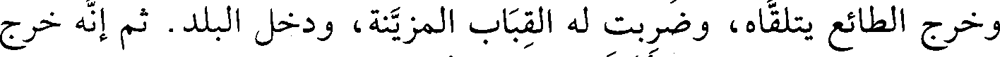
وخرج الطائع يتلقاه، وضربت له القباب المزينة، ودخل البلد. ثم إنه خرج
File: 000012.gt.txt (if the image is defective, simply delete all Arabic text and the line will be excluded)
لقتال عز الدولة، فالتقوا، فأخذ عز الدولة أسيرا، وقتله بعد ذلك.
File: 000013.gt.txt (if the image is defective, simply delete all Arabic text and the line will be excluded)
وخلع الطائع على عضد الدولة خلع السلطنة وتوجه بتاج مجوهر،
File: 000014.gt.txt (if the image is defective, simply delete all Arabic text and the line will be excluded)
وطوقه، وسوره، وقلده سيفا، وعقد له لواءين بيده، أحدهما مفضض على
File: 000015.gt.txt (if the image is defective, simply delete all Arabic text and the line will be excluded)
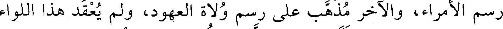
رسم الأمراء، والآخر مذهب على رسم ولاة العهود، ولم يعقد هذا اللواء
File: 000016.gt.txt (if the image is defective, simply delete all Arabic text and the line will be excluded)
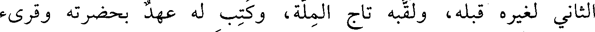
الثاني لغيرة قبله، ولقبه تاج الملة، وكتب له عهد بحضرته وقرىء
File: 000017.gt.txt (if the image is defective, simply delete all Arabic text and the line will be excluded)
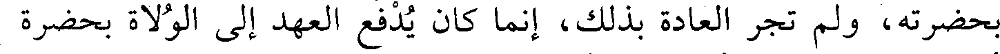
بحضرته، ولم تجر العادة بذلك، إنما كان يدفع العهد إلى الولاة بحضرة
File: 000018.gt.txt (if the image is defective, simply delete all Arabic text and the line will be excluded)
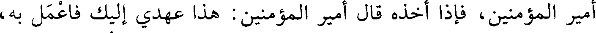
أمير المؤمنين، فإذا أخذه قال أمير المؤمنين : هذا عهدي إليك فاعمل به،
File: 000019.gt.txt (if the image is defective, simply delete all Arabic text and the line will be excluded)
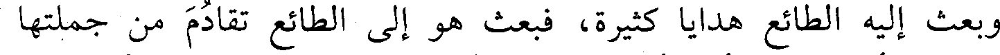
وبعث إليه الطائع هدايا كثيرة، فبعث هو إلى الطائع تقادم من جملتها
File: 000020.gt.txt (if the image is defective, simply delete all Arabic text and the line will be excluded)
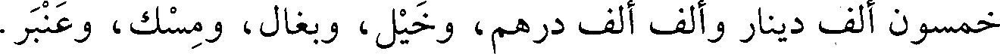
خمسون ألف دينار وألف ألف درهم، وخيل، وبغال، ومسك، وعنبر.
File: 000021.gt.txt (if the image is defective, simply delete all Arabic text and the line will be excluded)
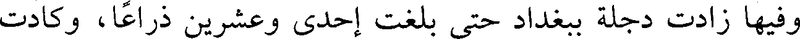
وفيها زادت دجلة ببغداد حتى بلغت إحدى وعشرين ذراعا، وكادت
File: 000022.gt.txt (if the image is defective, simply delete all Arabic text and the line will be excluded)
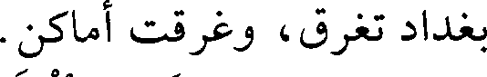
بغداد تغرق، وغرقت أماكن.
File: 000023.gt.txt (if the image is defective, simply delete all Arabic text and the line will be excluded)
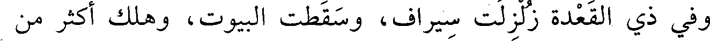
وفي ذي القعدة زلزلت سيراف، وسقطت البيوت، وهلك أكثر من
File: 000024.gt.txt (if the image is defective, simply delete all Arabic text and the line will be excluded)
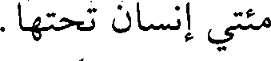
مئتي إنسان تحتها.
File: 000025.gt.txt (if the image is defective, simply delete all Arabic text and the line will be excluded)
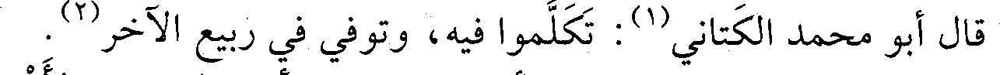
قال أبو محمد الكتاني(1) : تكلموا فيه، وتوفي في ربيع الآخر(2) .
File: 000026.gt.txt (if the image is defective, simply delete all Arabic text and the line will be excluded)
58 - محمد بن هانىء، أبو القاسم وأبو الحسن الأزدي
File: 000027.gt.txt (if the image is defective, simply delete all Arabic text and the line will be excluded)
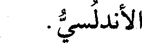
الأندلسي.
File: 000028.gt.txt (if the image is defective, simply delete all Arabic text and the line will be excluded)
قيل : إنه من ذرية المهلب بن أبي صفرة.
File: 000029.gt.txt (if the image is defective, simply delete all Arabic text and the line will be excluded)
كان أبوه شاعرا أديبا، وأما هو فحامل لواء الشعر بالأندلس، ولد
To Save: `Ctrl+s`, make sure to choose `Webpage, complete`!